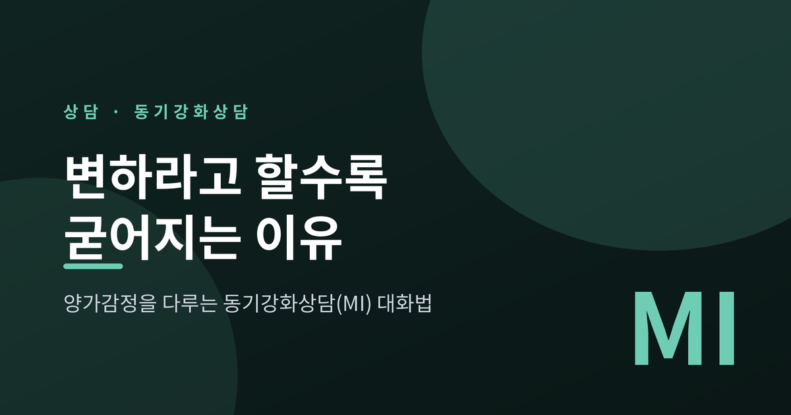
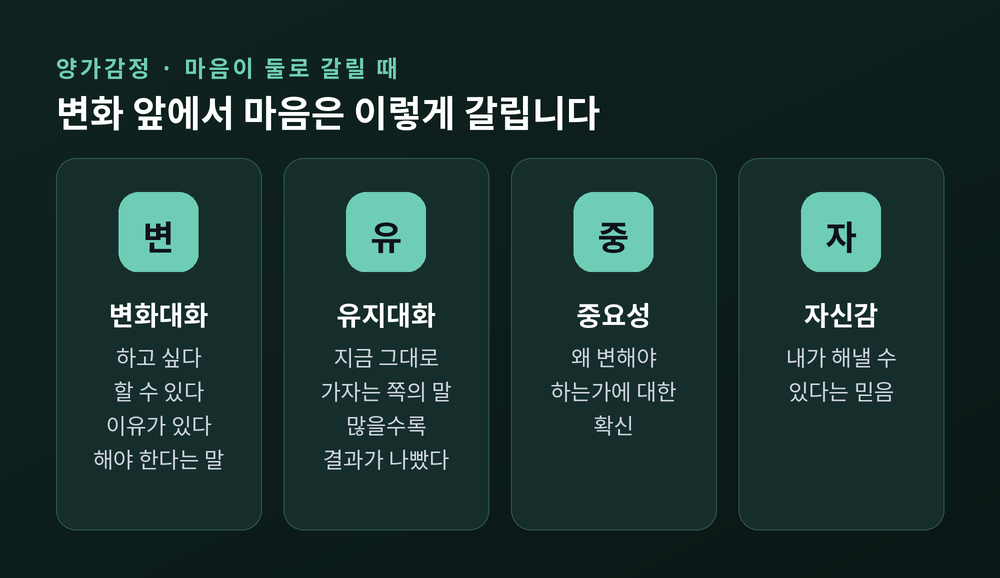
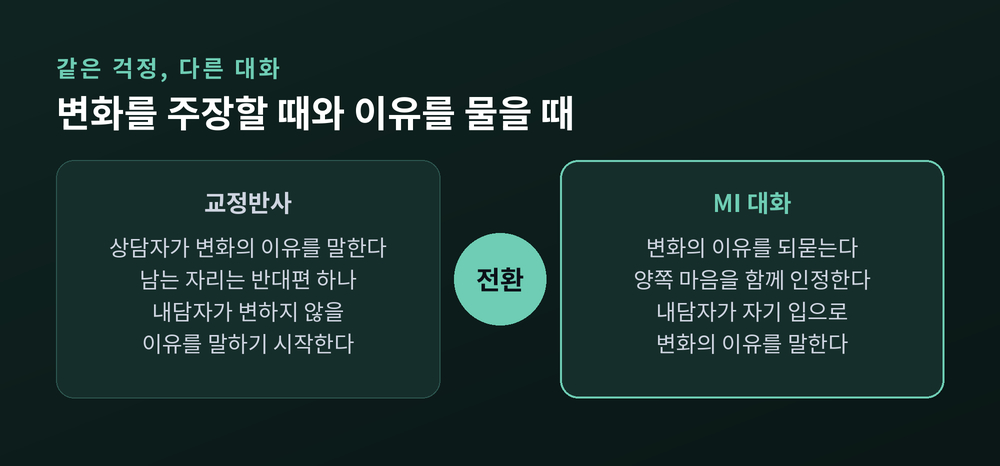
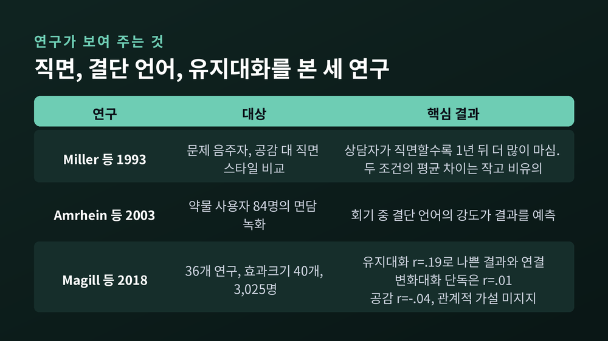
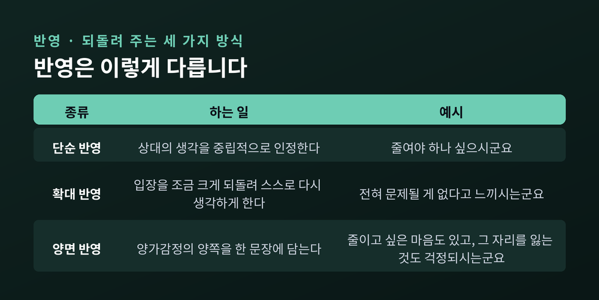
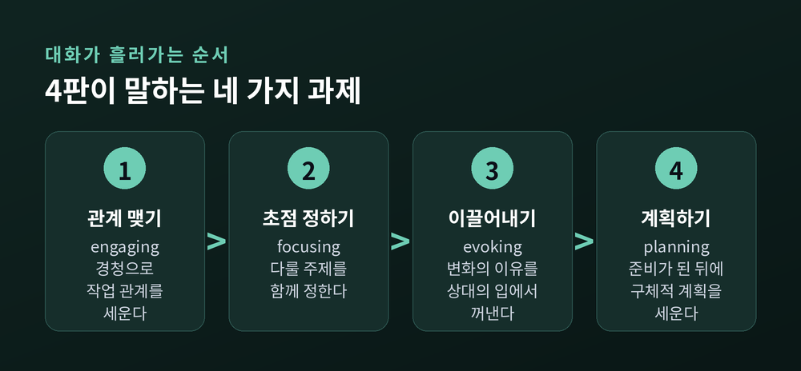
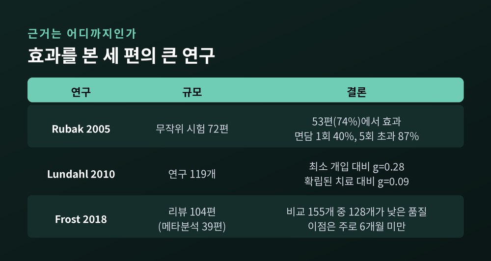

교정반사와 유지대화, 양가감정을 다루는 반영의 원리와 연구 근거

오늘은 동기강화상담(Motivational Interviewing, MI)을 통해 '변하라고 말할수록 사람이 변하지 않는 이유'를 이야기해 보려 합니다. 마음이 둘로 갈리는 상태, 곧 양가감정을 어떻게 다루는지가 이 접근의 중심입니다. 원리와 연구 근거, 실제 대화의 결, 그리고 한계까지 차례로 정리하겠습니다.
먼저 핵심만 세 줄로 적습니다.
살을 빼야 한다는 것을 압니다. 그런데 저녁의 야식이 하루의 유일한 낙이기도 합니다. 술을 줄여야 한다고 생각하면서도, 술자리가 사람들과 이어지는 통로라는 것도 압니다.
이런 상태를 양가감정(ambivalence)이라 합니다. MI의 창시자 Rollnick과 Miller의 글에는 이런 예가 나옵니다. "담배를 끊으면 나 자신에 대해 기분이 나아지겠지만, 살이 쪄서 불행하고 매력 없게 느껴질 수도 있다." 한 문장 안에 두 마음이 함께 있습니다.
MI는 이 상태를 고쳐야 할 결함으로 보지 않습니다. 상담자의 일은 "양가감정이라는 교착 상태의 양쪽 모두를 표현하도록 돕고, 받아들일 만한 해결로 안내하는 것"이라고 정의합니다.
또 하나 눈여겨볼 대목이 있습니다. Miller는 양가감정이 변화를 고민하는 초기 단계에만 있는 것이 아니라고 말합니다. 변화를 시작한 뒤 장기적으로 유지하려는 때에도 계속된다는 것입니다. 마음이 갈리는 일은 한 번 지나가는 관문이 아니라, 변화의 길 내내 따라다니는 동행에 가깝습니다.
준비된 정도도 한 가지 잣대로는 재기 어렵습니다. 논문에서는 두 축을 나눕니다. 중요성(왜 변해야 하는가)과 자신감(내가 해낼 수 있다는 믿음)입니다. 중요하다고 느끼면서 자신이 없는 사람에게 필요한 대화와, 할 수 있다고 믿으면서 중요성을 못 느끼는 사람에게 필요한 대화는 서로 다릅니다.

누군가 힘들어하면 곧바로 답을 주고 싶어집니다. 이 충동에 MI는 이름을 붙였습니다. 교정반사(righting reflex), "문제를 알아차리고 상대 대신 해결하려는, 선의에서 나오는 자동적인 충동"입니다. 2023년 4판에서는 '고치려는 반사(fixing reflex)'라는 쉬운 말로 바꿔 부릅니다. Rollnick은 아이 대신 퍼즐을 맞춰 주는 부모에 비유합니다.
여기서 벌어지는 일을 가상의 장면으로 그려 보겠습니다. 실제 인물이나 내담자가 아닌, 일반화한 예시입니다.
가족: 이제 그만 좀 마셔. 건강 다 망가져.
본인: 나도 알아. 그런데 내가 언제 그렇게 많이 마셨다고 그래.
가족: 지난주에도 세 번이나 마셨잖아.
본인: 그 정도는 다들 마시는 거야.
가족은 변화가 필요한 이유를 정확히 말했습니다. 그러자 본인은 변하지 않아도 되는 이유를 말하기 시작합니다. 역할이 나뉘어 버린 것입니다. 한쪽이 변화를 맡으면 다른 쪽에는 반대편 자리만 남습니다.
VA(미국 보훈부) 지침도 같은 위험을 경고합니다. 성급히 변화를 밀어붙이면 내담자가 방어적이 되고 오히려 더 양가적이 될 수 있다는 것입니다. Rollnick은 성급한 해결책이 상대가 이미 문제를 인정하고 변화할 준비가 됐다고 가정하는 셈이 되어, 양가감정을 지속시킨다고 설명합니다. 관계를 세우고, 초점을 맞추고, 이유를 끌어내는 초기 과정을 건너뛰고 곧장 계획으로 달려가는 것이 문제라는 뜻입니다.
Miller의 진단은 더 냉정합니다. 사람에게 자율성이 없는 것처럼 대하면 "당신은 ~해야 합니다"라는 처방적 전문가가 됩니다. 이때 예상되는 결과는 변화 없음이고, 그러면 우리는 사람들이 '저항'한다고 탓하게 된다는 것입니다.

예전에는 저항을 내담자의 특성으로 보았습니다. 지금 MI는 저항을 대화 안에서 일어나는 사건으로 봅니다.
근거가 있습니다. Patterson과 Forgatch(1985)의 실험은 상담자의 반응에 따라 '저항'이 한 회기 안에서도 오르내린다는 것을 보였습니다. Rollnick과 Miller의 글에는 이 생각이 한 문장으로 담겨 있습니다. 변화에 대한 준비는 내담자의 특성이 아니라 "대인 상호작용 속에서 변동하는 산물"이라는 문장입니다.
3판부터 MI는 저항이라는 말을 두 갈래로 나눕니다. 하나는 유지대화(현상을 유지하자는 쪽의 말), 다른 하나는 불화(관계의 균열)입니다. 둘 다 상담자의 스타일에 매우 민감하게 반응하고, 둘 중 어느 쪽이든 우세해지면 나쁜 결과를 예측한다고 합니다. 이 구분은 4판에서도 그대로 유지됩니다.
Miller, Benefield, Tonigan(1993)의 연구가 이 장면을 잘 보여 줍니다. 문제 음주자에게 검사 결과 피드백을 주면서, 한쪽은 공감적인 MI 스타일로, 다른 한쪽은 내담자가 문제를 축소하면 논쟁하는 직면적 스타일로 진행했습니다. 결과는 이렇게 요약됩니다. 상담자가 논쟁하고 불신을 드러내고 부정적으로 말할수록, 1년 뒤 내담자는 더 많이 마셨습니다. 내담자의 저항 행동은 상담자의 직면적 반응과 강하게 함께 움직였습니다.
다만 한계도 짚어 둡니다. 두 조건의 평균 차이는 작았고 통상의 유의수준에 이르지 못했다고 보고됩니다. 강했던 것은 조건의 평균 차이가 아니라, 개별 상담자가 얼마나 직면했느냐와 결과 사이의 관계였습니다. 이 연구의 표본 크기는 이번에 확인한 자료에서는 알 수 없었습니다.
MI는 여기서 한 걸음 더 나갑니다. 사람은 남이 하는 말보다 자기 입으로 하는 말에 더 움직인다고 봅니다. VA 지침은 이렇게 적습니다. "사람들은 자기 스스로 변화를 주장할 때 변할 가능성이 가장 높다."
그래서 MI는 상대의 말을 두 갈래로 나누어 듣습니다. 변화 쪽으로 기운 말이 변화대화입니다. 변하고 싶다는 욕구, 할 수 있다는 능력, 변해야 하는 이유와 필요를 담은 말입니다. 반대로 지금대로 가자는 쪽의 말이 유지대화입니다.
연구는 이 구분이 결과와 이어진다고 말합니다.
Miller와 Rollnick은 인터뷰에서 이 점을 이렇게 요약합니다. 유지대화를 누그러뜨리는 것이 변화대화를 늘리는 것보다 결과를 더 잘 예측한다는 연구가 나오고 있다고요. 변화의 말을 부지런히 끌어내는 일만큼, 반대편의 말을 키우지 않는 일도 중요하다는 뜻입니다.
한 가지는 같은 메타분석에서 나온 불편한 결과입니다. 상담자의 공감과 MI 정신이 행동 변화로 곧바로 이어진다는 '관계적 가설'은 이 분석에서 지지되지 않았습니다(공감 r=-.04, MI 정신 r=-.04). 저자들은 임상시험이라는 환경의 한계를 언급하며 자연스러운 상담 상황의 연구를 제안합니다. 반면 Miller는 행동치료를 전달하는 동안의 상담자 공감이 음주 결과 분산의 3분의 2를 설명했다(6개월 시점 r=.82)고 소개합니다. 두 결과는 충돌합니다. 어느 쪽이 틀렸다고 단정하기보다, 관계가 결과에 닿는 경로가 아직 논쟁 중이라고 이해하는 편이 안전합니다.

MI가 권하는 방법은 조용합니다. 변화를 주장하는 대신 질문하고, 들은 것을 되돌려 줍니다. VA 지침이 든 열린 질문은 이런 식입니다. "장기적인 건강에 대해 어떤 걱정이 있으세요?", "술을 줄인다면 어떤 이유가 있을까요?" 변화의 이유를 상대의 입에서 꺼내는 질문입니다.
되돌려 주는 반영에는 세 가지가 있습니다. 단순 반영은 상대의 생각을 중립적으로 인정합니다. 확대 반영은 상대의 입장을 조금 크게 되돌려 스스로 다시 생각하게 합니다. 양면 반영은 양가감정의 양쪽을 한 문장에 담습니다.
앞의 장면을 바꾸어 보겠습니다. 역시 가상의 예시입니다.
가족: 요즘 술자리가 잦아서 마음이 쓰였어요. 어떻게 생각하세요?
본인: 좀 줄여야 하나 싶기는 해요. 근데 그게 유일하게 사람들 만나는 자리라서요.
가족: 줄이고 싶은 마음도 있고, 그 자리를 잃는 것도 걱정되시는군요.
본인: 네. 사실 아침에 일어나기가 너무 힘들어요.
"줄여야 하나 싶다"는 변화대화가 나왔고, 뒤이어 자기 입으로 이유를 말했습니다. 상대를 설득한 것이 아니라 말할 자리를 비워 둔 결과입니다.
Cambridge 논문에는 식이장애 사례로 같은 원리가 나옵니다. 체중이 늘 것이라는 두려움과 눈에 보이는 건강 위험을 양면 반영으로 함께 짚습니다. 어느 쪽 마음도 부정하지 않으면서 둘 다 대화의 탁자 위에 올려 두는 방식입니다.

이 대화에는 순서도 있습니다. 4판은 관계를 맺고(engaging), 초점을 정하고(focusing), 변화의 이유를 끌어내고(evoking), 계획을 세우는(planning) 네 과제를 말합니다. 앞의 세 과제를 건너뛰고 곧장 계획으로 가는 것이 교정반사의 전형이라는 점은 앞서 보았습니다.

효과는 비교 대상에 따라 다르게 보입니다.
Rubak 외(2005)는 무작위 대조 시험 72편을 검토했습니다. 이 가운데 53편(74%)에서 유의하고 임상적으로 의미 있는 효과가 나왔고, 결론은 "전통적인 조언 주기보다 우수하다"였습니다. 면담 횟수의 차이도 눈에 띕니다. 한 번만 만난 경우 효과가 나온 비율은 40%, 다섯 번을 넘긴 경우는 87%였습니다. 면담 횟수가 많을수록 효과를 보인 시험의 비율이 높았다는 이야기입니다.
한편 Lundahl 외(2010)는 119개 연구를 묶어, 최소한의 개입과 견주면 작지만 유의한 효과(평균 g=0.28)를, 이미 확립된 다른 치료와 견주면 g=0.09를 보고했습니다. 다른 좋은 치료보다 우월한 것은 아니라는 뜻입니다.
Frost 외(2018)의 '리뷰들의 리뷰'는 더 조심스럽습니다. 리뷰 104편(메타분석 39편)을 살핀 결과, 메타분석 비교 155개 중 128개는 근거 품질이 낮거나 매우 낮았고 높은 품질의 근거는 없었습니다. 중간 품질의 이점은 폭음 감소, 금연, 물질 사용 감소, 신체활동 증가에서 확인되었고, 대체로 6개월 미만의 단기 효과였습니다.

정리하자면 이렇습니다. MI는 '아무 개입이 없는 것'보다는 낫다는 근거가 꽤 있고, '다른 좋은 치료'보다 낫다는 근거는 약합니다. 이 차이를 알고 쓰는 것이 정직한 사용법입니다.
적용의 한계도 분명합니다. Miller는 MI가 우울증에 대한 근거기반 치료의 대안이 아니라, 그 치료를 전달하는 방식이라고 선을 긋습니다. 자살 위험이나 자해 상황에서는 MI를 단독으로 쓰면 안 됩니다. 집단 형식이 일대일보다 덜 효과적일 수 있다는 지적도 있습니다.
이 이야기는 상담실 밖에서도 쓸모가 있습니다. 가족이나 친구가 변하지 않아 답답할 때, 우리가 가장 먼저 꺼내는 것이 교정반사이기 때문입니다.
다만 MI를 '상대를 움직이는 기술'로 오해하면 곤란합니다. 결과를 정해 놓고 질문으로 상대를 몰아가는 것은 또 다른 설득일 뿐입니다. 4판이 MI 정신의 핵심으로 협력, 수용, 동정심, 그리고 상대에게 힘을 실어 주는 것을 꼽는 이유가 여기에 있습니다.
몇 가지만 실천해 보시기를 권합니다.
마지막으로 한 가지만 덧붙이겠습니다.
변화는 밀어서 일어나지 않고, 상대가 자기 이유를 스스로 발견할 때 시작됩니다. 저는 이 글의 결론을 이 한 문장에 담고 싶습니다. "변화의 이유는 내 입에서 나올 때 비로소 내 것이 됩니다."
이 글은 MI라는 접근을 소개한 것이며, 스스로를 상담하거나 다른 사람을 치료하는 방법을 안내하는 글이 아닙니다. 음주나 흡연 같은 습관, 우울, 관계의 어려움처럼 지속되는 어려움을 겪고 계신다면 전문 상담사나 정신건강의학과 등 전문가와 상의하시길 권합니다. 혼자 견디는 것보다 훨씬 나은 선택입니다.
가까운 사람이 꿈쩍도 하지 않아 답답하시냐고 물으신다면, 제 답은 이렇습니다. 오늘은 조언 한 마디를 삼키고 질문 하나를 건네 보시라고요.